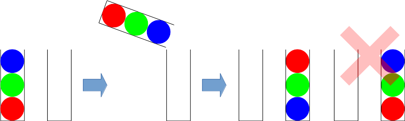
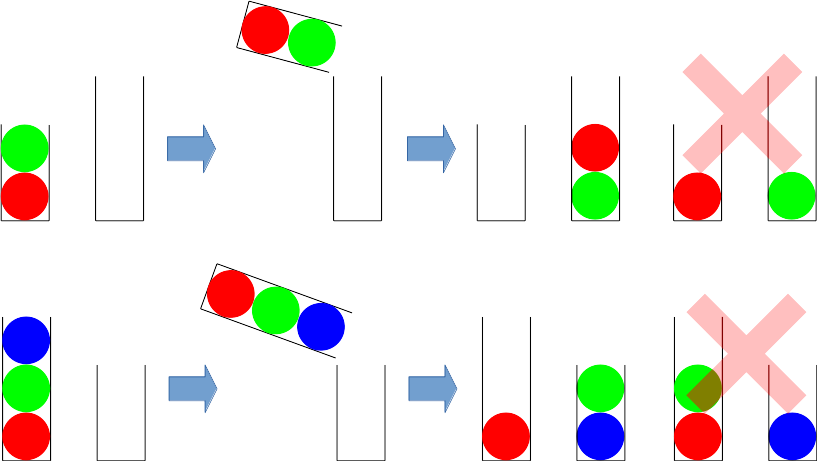
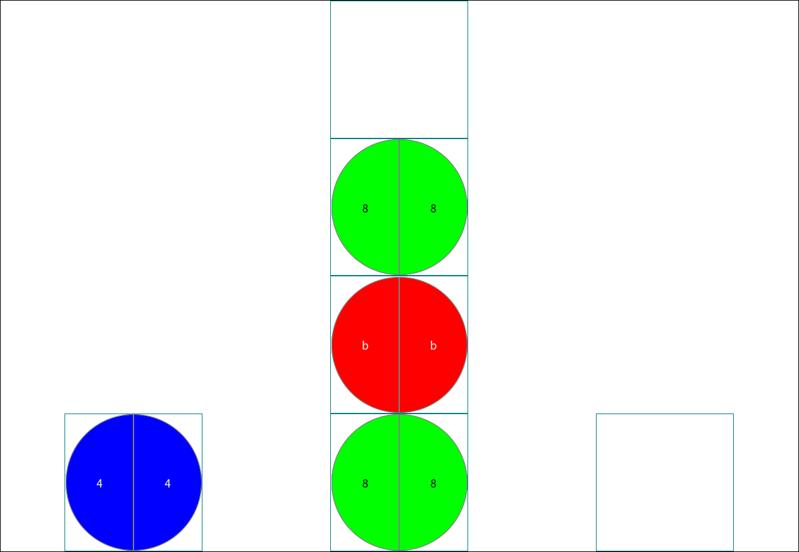
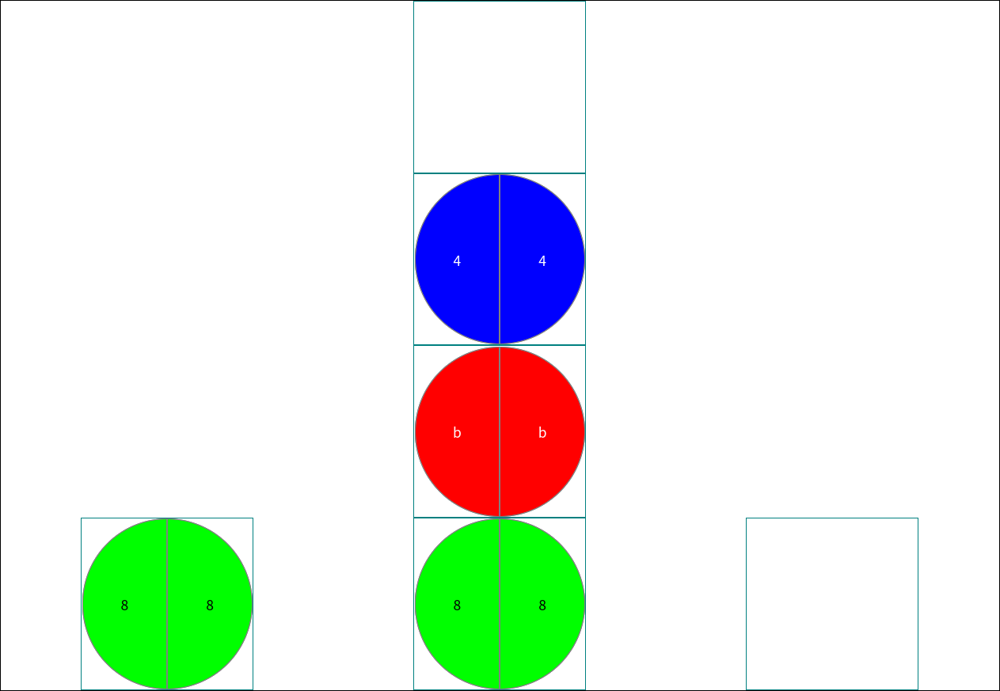
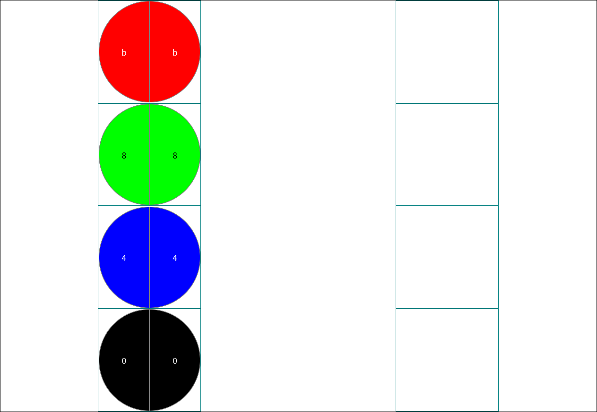
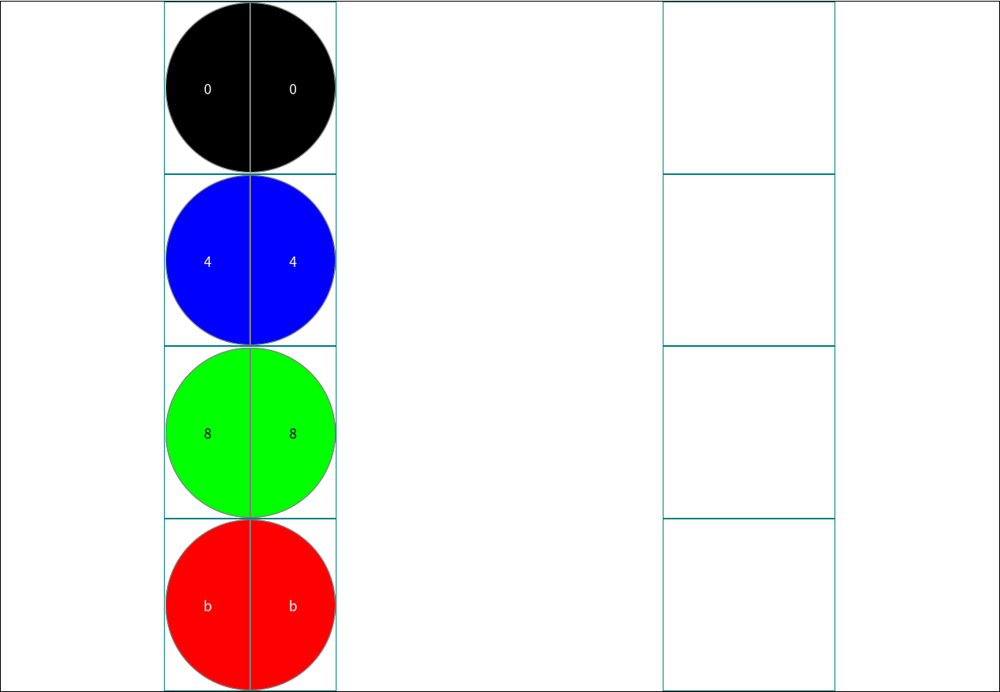
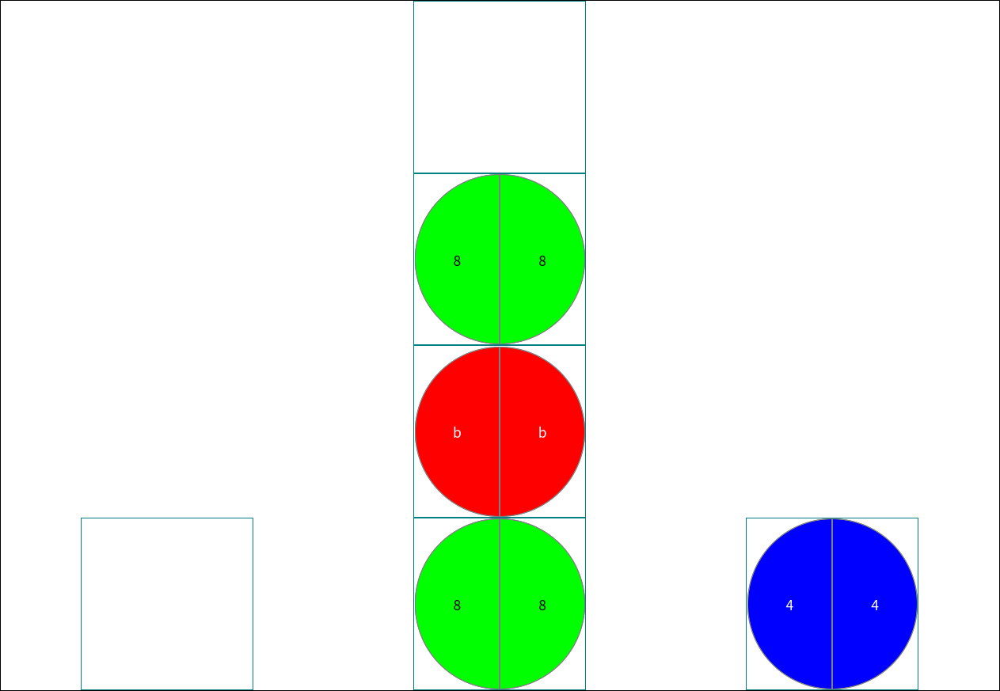
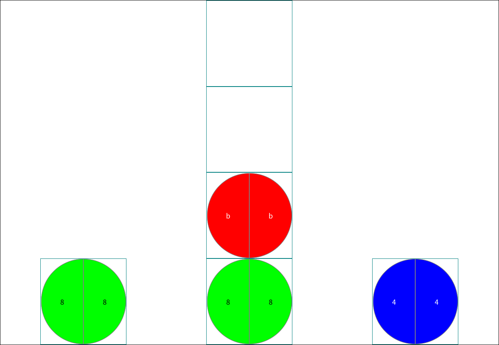
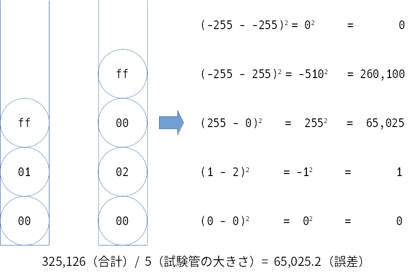

ビーダマ教授
2022年度プログラミング・コンクール課題2では、Prof. Marblesに似たパズルを説いていただきます。
ルール
試験管の中にビーダマが入っています。試験管から試験管にビーダマを移動させ、できるだけゴールと同じ状態にしてください。
ルール1: 移動先のビーダマの順序は、移動元の逆の順序になります

ルール2: 移動は、移動元の試験管が空になるか、移動先の試験管が満タンになるまで止まりません

入力データ
以下に、入力データの具体例を示します（#以降はコメントです。入力データに含めないようにしてください）。
3 # 試験管の数
1 # 試験管0の大きさ。試験管0にはビーダマが1つしか入らない
4 # 試験管1の大きさ。試験管1にはビーダマが4つまで入れられる
1 # 試験管2の大きさ。試験管2にはビーダマが1つしか入らない
44 # 初期の状態で試験管0に入っているビーダマ。44（10進数での68）番の色のビーダマが1つだけ入っている。ビーダマの色は16進数2桁
88 bb 88 # 初期の状態で試験管1に入っているビーダマ。下から順に、88（10進数での136）番の色、bb（10進数での187）番の色、88番の色のビーダマが入っている
# 初期の状態で試験管2に入っているビーダマ。試験管は空でビーダマは入っていない
88 # ゴールで試験管0に入っているビーダマ。88版の色のビーダマが１つだけ入っている
88 bb 44 # ゴールで試験管1に入っているビーダマ。下から順に、88番の色、bb番の色、44番の色のビーダマが入っている
# ゴールで試験管2に入っているビーダマ。試験管は空でビーダマは入っていないこの入力データでの試験管の初期の状態は以下になります。

この入力データでのゴールの状態は以下になります。

以下に、W3CのEBNF（Extended Backus-Naur Form）で定義した入力データのフォーマットを示します。
Input ::= TestTubeCount NewLine TestTubeSizes NewLine InitialMarblesCollection NewLine GoalMarblesCollection NewLine?
TestTubeCount ::= PositiveInteger /* 1〜64にしてください。 */
TestTubeSizes ::= TubeSize (NewLine TubeSize)* /* TestTubeCount行にしてください。 */
TubeSize ::= PositiveInteger /* 1〜64にしてください。 */
InitialMarblesCollection ::= Marbles (NewLine Marbles)* /* TestTubeCount行にしてください。 */
GoalMarblesCollection ::= Marbles (NewLine Marbles)* /* TestTubeCount行にしてください。 */
Marbles ::= (Marble (Space Marble)*)? /* TestTubeSize以下の数にしてください。 */
Marble ::= HexDigit HexDigit /* 00〜ffにしてください。 */
Space ::= ' '
NewLine ::= #x0D | #x0A | (#x0D #x0A)
PositiveInteger ::= DigitStart (Digit)*
DigitStart ::= '1' | '2' | '3' | '4' | '5' | '6' | '7' | '8' | '9'
Digit ::= '0' | DigitStart
HexDigit ::= 'a' | 'b' | 'c' | 'd' | 'e' | 'f' | Digit以下に、フォーマット中のコメントで示したルールを再掲します。
- 試験管の数は1〜64
- 試験管の大きさは1〜64
- ビーダマの色は00〜ff（0〜255）
なお、ビーダマを移動させてゴールの状態にすることが不可能でも構いません。具体的には、以下のような入力データも正しい入力データとして扱います。
2 # 試験管は2本
4 # 試験管0の大きさは2
4 # 試験管1の大きさは2
00 44 88 bb # 初期状態で試験管0に入っているビーダマは00、44、88、bbの順
# 初期状態で試験管1は空
bb 88 44 00 # ゴールで試験管0に入っているビーダマはbb、88、44、00の順
# ゴールで試験管1は空上の入力データの初期状態とゴールは以下になります。


この初期状態からどれだけビーダマを移動させてもゴールの状態にはなりませんが、このような入力データでも構いません。また、初期状態とゴールでビーダマの合計数が異なっている場合も正しい入力データとします。
出力データ
以下に、出力データの具体例を示します（#以降はコメントです。出力データに含めないようにしてください）。
0 2 # 試験管0から試験管2にビーダマを移動
1 0 # 試験管1から試験管0にビーダマを移動
2 1 # 試験管2から試験管1にビーダマを移動入力データの最初で示したサンプルでの初期状態は、以下になります。
0 2を実行すると、以下になります。

1 0を実行すると、以下になります。

2 1を実行すると、以下になります。
これでゴールの状態と同じになりました。この出力データの手数は3になります。
作成していただくプログラム
作成していただくプログラムは、以下の制限を満たしてください。
- Windows 10 (64bit)で動作可能にしてください。
- 標準入力から入力データを入力し、標準出力に出力データを出力してください。
- プログラムの起動〜終了の時間を10秒以内にしてください。
評価方法
ゴールと最終状態のビーダマの色の差を2乗して合計し、試験管の大きさの合計で割った結果をゴールとの誤差とします（ビーダマが入っていない部分は、-255として扱います）。ゴールと同じ状態にできれば、ゴールとの誤差は0になります。

本課題では、問題単位に以下で順位をつけます。
- ゴールとの誤差が小さい順
- ゴールとの誤差が同じ場合は、手数が少ない順
順位に応じて、以下でポイントを配分します。
| 1位 | 2位 | 3位 | 4位 | 5位 | 6位 | 7位 | 8位 | 9位 | 10位 | 11位 | 12位 | 13位 | 14位 | 15位以下 |
|---|---|---|---|---|---|---|---|---|---|---|---|---|---|---|
| 25 | 20 | 16 | 13 | 11 | 10 | 9 | 8 | 7 | 6 | 5 | 4 | 3 | 2 | 1 |
順位は、自分よりも良い解答を出した参加者の数 + 1です。1位が2人いる場合、次の参加者は3位になります。
同じ順位の参加者が複数いる場合は、ポイントを等分します。1位が2人なら(25 + 20) / 2、3人なら(25 + 20 + 16) / 3になります。
出力データのフォーマットにエラーがあったりプログラムの起動〜終了の時間が10秒を超えたりした場合は失格となり、その問題のポイントは0となります。
獲得したポイントの合計で最終順位を決定します。獲得したポイントの合計が同じ参加者が複数いる場合は、総実行時間が少ない参加者を上位とします。
試合形式
問題を解くプログラムと問題をセットにして提出してください。参加者それぞれのプログラムが、自身を含む参加者全員の問題を解きます。
問題が提出されなかった場合、フォーマットにエラーがあった場合、他の参加者やサンプルと同一の問題が提出された場合、その他運営になんらかの支障があるとオブザーバーが判断した場合は、これらに該当する問題と同数の問題をオブザーバーが作成し、該当する問題の代わりに出題します。また、参加者の人数が少ない場合も、オブザーバーが問題を作成して追加します。
進行手順
7月に練習試合、12月に公式試合を実施します。
練習試合は提出形式やプログラムの動作を参加者が確認するために実施するもので、選考には影響しません。練習試合の結果は、実行時間と出力結果（失格時は失格理由）、順位をプログラムの作成者にのみ公開します。また、参考のために、各問題における1位の結果を参加者全員に公開します。
各試合は、事務局が用意するPC（スペックは別途連絡）で、ネットワークから遮断した状態で実施します。